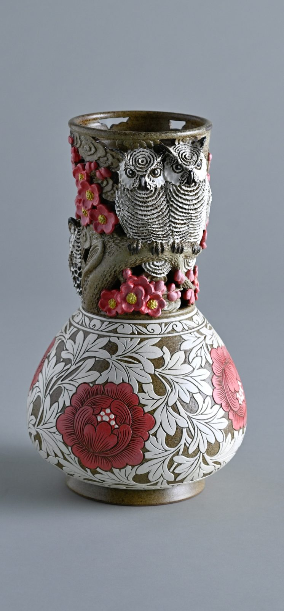
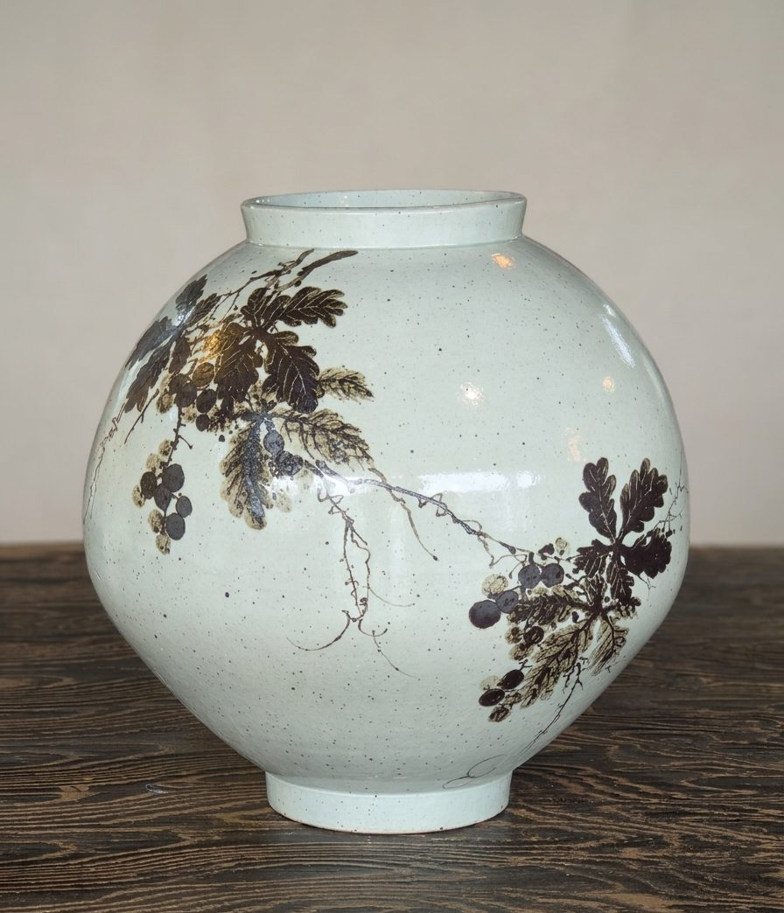
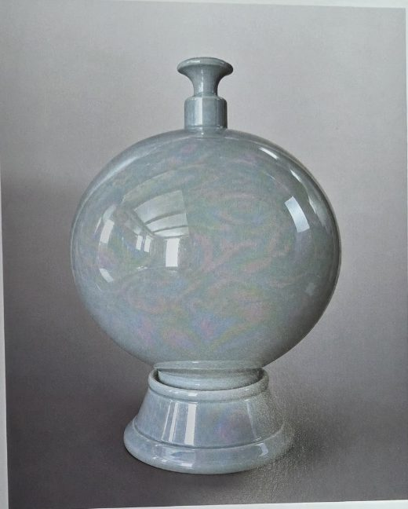
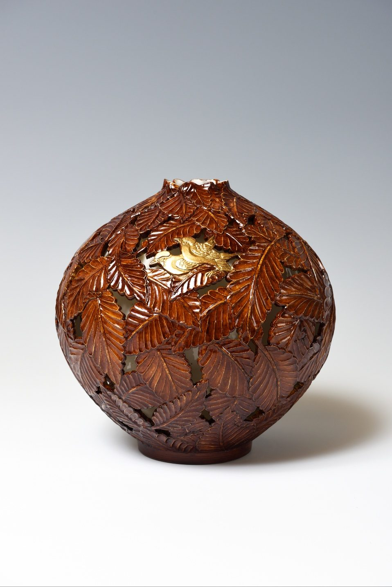
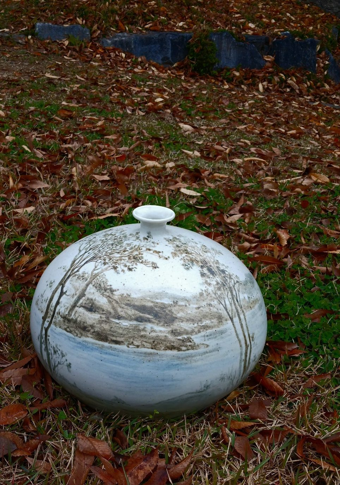

소우재 · 소우재도예
강신봉
- 2008 포스코갤러리 초대 개인전
- 2009 화가와 달항아리전 (갤러리 현대)
- 2021 선방의 달항아리전 (여주생활도자미술관)
- 2025 화인회 제18회 정기전
- 2026 남천갤러리 초대전 (포항 남천갤러리)
Exhibition No. 19
주최 사단법인 한국예총경기도연합회 여주지회 · 주관 화인회 · 후원 여주시
인사말씀
19회 화인회 전시에 함께해 주신 여러분께 감사의 인사를 드립니다.
화인회는 흙과 불이 만들어 내는 도자의 깊은 아름다움 위에 작가 각자의 감성과 예술적 표현을 담아내는 모임입니다. 장작가마의 자연스러운 불길이 빚어내는 변화와 도자기 위에 펼쳐지는 회화적 표현은 서로 다른 개성을 지니면서도 하나의 예술적 조화를 이루어 갑니다.
오랜 시간 흙과 불, 그림을 통해 창작의 길을 함께 걸어온 화인회 작가들의 작품이 이번 전시를 통해 새로운 감동과 소통의 시간이 되기를 바랍니다.
2026년 11월 화인회원 일동
Works
작품을 누르면 크게 볼 수 있습니다.







Artists
소우재 · 소우재도예
Owl artist · 의석도예
일사 · 일사도예
흙도예 · 흙도예
청심 · 청심전승요업
현진 · 비움과채움
단아 · 전원도예연구소
富土 · 고성도예
혜강 · 그리미있는 풍경